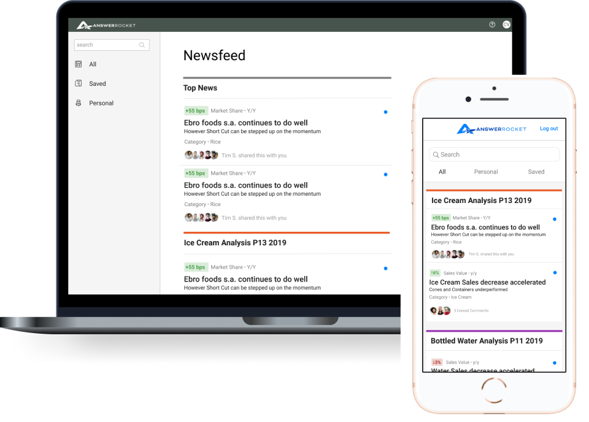

Deliver mobile-optimized data insights for easy business user access
UX Workshops • UI Design • Wireframes • iOS Design • Design Systems

UX Workshops • UI Design • Wireframes • iOS Design • Design Systems
Following a highly successful presentation at a recent Gartner trade conference, where the NewsFeed was recognized as a standout feature, the Head of Product expressed interest in further enhancing the NewsFeed experience. This initiative includes expanding its functionality to our iOS application and redesigning the desktop interface to create a more cohesive and impactful user experience.
Mobile downloads increased significantly in the months following the iOS App Store launch, reflecting strong user demand and successful execution of the project.
The team is unclear about the target users of the Newsfeed feature. Previously, AnswerRocket managed the setup of the COVID data—who will be responsible for this moving forward? Additionally, what specific insights are business users seeking from this data? To address these questions, I facilitated a workshop with two Project Managers and the Head of Product Marketing.
Collaborated with our Director of Product Marketing to align on who the users were of this new feature.
Working closely with Product and a team member from Engineering, we collaborated on wireframes remotely in Figma.
Discussions and work around ways to drill into the data and exploring social features.
The CEO and engineering team were eager to proceed with the project and ready to begin work immediately. To maintain momentum and ensure a smooth development process, they required finalized, polished UI designs. In response, I quickly transitioned to delivering high-fidelity UI screens to meet their needs and keep the project on track.
In these mockups, I present "stories" derived from data that business members can explore in depth.
Final NewsFeed UI Screens for Engineering.
I collaborated closely with the lead front-end developer to transform our Figma prototype into live code for usability testing using TestFlight. We utilized Jira to effectively track tasks and facilitate collaboration with project managers and developers. While working remotely, I ensured open communication by making my direct messages available to developers via Slack for any quick questions.
By utilizing Lookback for remote testing, I was able to assess the designs on the actual devices of our test participants. Additionally, I invited junior product owners to observe the live testing sessions, providing them with valuable exposure to the testing process, which they had not previously experienced.
Product team worked with development to address our top findings from the testing. We refreshed the entire mobile application to be up to date with our Design System, Galaxy.
Cleaning up older screens to align with our design system, Galaxy
I initiated the first Design System at AnswerRocket, known as Galaxy. Many aspects of the legacy design and development required updates to align with the latest design work. Below are a few screens from the Design System.
Here a few pages from our documentation of Galaxy, AnswerRocket's Design System.
We translated several elements of the new design work back to the desktop interface to ensure a seamless user experience across platforms. This initiative was spearheaded by our product and development teams, emphasizing our commitment to providing a cohesive and integrated experience for users.
Translating mobile design elements into the legacy desktop application.
Previous application in Apple Store
New application in Apple Store
Following the launch in the iOS App Store, mobile downloads experienced a substantial increase over the subsequent months. This surge in downloads indicates a growing user interest and engagement with the Newsfeed feature.
I conducted a personal design retrospective to analyze and identify the challenges and successes encountered throughout this project. This reflective process involved reviewing key milestones, assessing design decisions, and evaluating user feedback to gain insights into what worked well and areas for improvement.